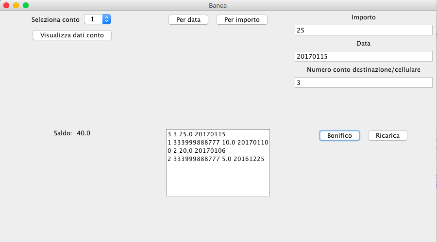

Banca
Sviluppare un programma per la gestione di conti correnti di una banca.
Tutte le classi si trovano nel package banca.
R1: Banca
Il programma funziona attraverso la classe principale Banca e permette di inserire conti correnti e transazioni.
È possibile aggiungere nuovi conti correnti tramite il metodo aggiungiContoCorrente() della classe Banca. Tale metodo riceve come parametri nome e cognome dell'intestatario e il saldo iniziale, assegna automaticamente un codice (a partire da 1), crea un oggetto di tipo ContoCorrente e ritorna il codice assegnato al conto. Per ottenere un conto corrente dato il codice del conto è possibile utilizzare il metodo getContoCorrente della medesima classe, che, ricevuto il codice di un conto corrente, restituisce un riferimento all'oggetto di classe ContoCorrente, oppure genera una eccezione ErrContoInesistente, qualora non sia possibile risalire a nessun conto corrente.
I metodi getCodiceConto(), getNomeIntestatario(), getCognomeIntestatario(), getSaldo() della classe ContoCorrente permettono di ottenere informazioni sul codice del conto, il nome e cognome dell'intestatario, e sul saldo attuale.
R2: Transazioni
I soldi presenti sui conti correnti possono essere movimentati tramite transazioni, rappresentate dall'omonima classe. Sono possibili due tipi di transazione: bonifico e ricarica cellulare.
I bonifici vengono effettuati tramite il metodo effettuaBonifico() della classe Banca, che riceve come parametri il codice del conto corrente di origine e del conto corrente di destinazione, l'importo da trasferire dal conto di origine a quello di destinazione e la data del bonifico (in formato AAAAMMGG). Tale metodo effettua le opportune operazioni e genera le eccezioni ErrContoInesistente e ErrContoScoperto qualora non sia possibile identificare il conto corrente, oppure questo non disponga di abbastanza soldi per effettuare l'operazione (i conti correnti possono andare a zero, ma non avere saldo negativo).
Le ricariche cellulare, invece, vengono registrate nel sistema per mezzo del metodo effettuaRicaricaCellulare() della classe Banca. Tale metodo riceve come parametri il codice del conto corrente di origine, il numero di cellulare da ricaricare, l'importo della ricarica e la data dell'operazione e genera le medesime eccezioni del metodo effettuaBonifico().
In entrambi i casi (bonifico e ricarica cellulare), se la transazione va a buon fine, la banca assenga a questa un codice numerico univoco a partire da 0.
N.B. in caso di bonifico, una transazione influenza due conti correnti, prelevando i soldi da quello di origine, e versandoli su quello di destinazione.
N.B. i codici delle transazioni sono univoci a livello di banca, non a livello di conto corrente.
R3: Elenchi conti correnti
È possibile ottenere l'elenco dei conti correnti della banca tramite il metodo elencoContiCorrentiPerCodiceCrescente() della classe Banca, che restituisce l'elenco dei conti correnti ordinati per codice conto crescente.
R4: Elenchi transazioni
Per ogni conto corrente è possibile ottenere l'elenco delle transazioni effettuate tramite i metodi elencoTransazioniPerData() e elencoTransazioniPerTipoeImporto() della classe ContoCorrente. Tali metodi restituiscono rispettivamente l'elenco delle transazioni, dalla più recente alla più vecchia, e l'elenco delle transazioni ordinate in base al tipo e importo, mettendo prima tutti i bonifici, ordinati in base a importo decrescente, e poi tutte le ricariche telefoniche, ordinate anch'esse in base a importo decrescente.
R5: Interfaccia Grafica
Realizzare l'interfaccia grafica per gestire i conti correnti simile alla
seguente:
Quando si effettua l'accesso, vengono mostrati nella combobox "Seleziona conto" i conti inseriti nel sistema (ordinati in base a codice conto crescente).
Quando l'utente seleziona un conto e clicca su "Visualizza dati conto", il sistema mostra il saldo del conto, e la lista delle transazioni effettuate per quel conto. Le transazioni sono stampate una per riga, riportando, nell'ordine, il codice della transazione, il numero del conto corrente di destinazione o del cellulare ricaricato, l'ammontare della transazione e la data, separati da uno spazio.
La visualizzazione di base, appena cliccato su "Visualizza dati conto" è quella per data. L'utente può decidere di cambiare visualizzazione e ordinare le transazioni per importo, cliccando sul pulsante "Per importo", o ritornare alla visualizzazione ordinata per data, cliccando sul pulsante "Per data".
L'interfaccia grafica permette anche di inserire transazioni, specificando l'importo, la data della transazione e il numero di conto corrente di destinazione o di cellulare e cliccando rispettivamente su "Bonifico" o "Ricarica" a seconda del tipo di transazione che si vuole eseguire. Le transazioni eseguite vengono automaticamente registrate, e mostrate nella lista delle transazioni.

N.B. usare gli attributi forniti per consentire il test della classe mediante JUnit.
Suggerimenti
Per una migliore disposizione dei contenuti, si utilizzino uno o più JPanel.
Per la scelta del conto da visualizzare si usi un JComboBox ed il suo costruttore JComboBox(Object[]).
Per la lista di transazioni si usi un JList.
Per aggiornare l'elenco si sfrutti il metodo setListData(Object[]).
La lista di transazioni può essere mostrata all'interno di un JScrollPane.
L'elemento selezionato in una lista può essere ottenuto con il
metodo getSelectedValue().